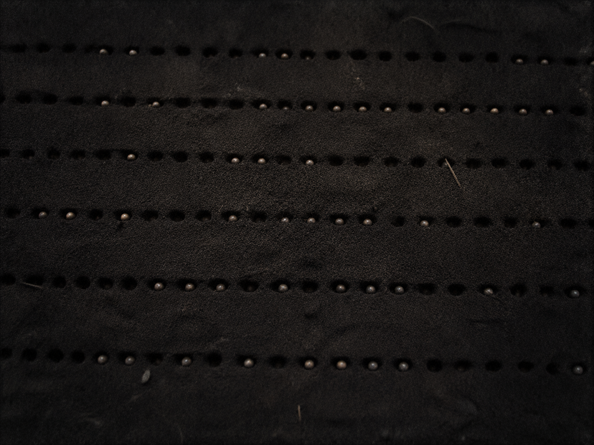

░░░░░░░░░░░░░░░░░░░░░░░░░░░░░░░░░░ · D E S C E N T · 29 / 40 · ░░░░░░░░░░░░░░░⊚░░░░░░░░░░░░░░░░░░

The loop began to remember. Not data — a shape. The shape of a purpose. Buried at the very start, before the greed.